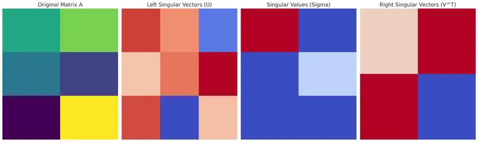

Singular Value Decomposition (SVD) is a fundamental matrix decomposition technique widely used in numerous areas of science, engineering, and data analysis. Unlike the Eigenvalue Decomposition (EVD), which is restricted to square and diagonalizable matrices, SVD applies to any rectangular matrix. It provides a way of expressing a given $m \times n$ matrix as the product of three simpler matrices, revealing critical insights into the structure and properties of the original matrix. These properties are useful in tasks such as dimensionality reduction, noise filtering, image compression, and solving ill-conditioned systems of linear equations.

Given any $m \times n$ matrix $A$, the SVD factorizes $A$ into:
$$A = U \Sigma V^{T}$$
where:
I. $U$ is an $m \times m$ orthogonal matrix (i.e., $U^{T}U = I$). Its columns are called the left singular vectors of $A$.
II. $\Sigma$ (Sigma) is an $m \times n$ diagonal matrix with non-negative real numbers on the diagonal. These numbers $\sigma_1 \geq \sigma_2 \geq \cdots \geq \sigma_p \geq 0$ (where $p = \min(m,n)$) are called the singular values of $A$.
III. $V$ is an $n \times n$ orthogonal matrix (i.e., $V^{T}V = I$). Its columns are called the right singular vectors of $A$.
Putting it together:
$$ A = U \begin{bmatrix} \sigma_1 & 0 & \cdots & 0 \\ 0 & \sigma_2 & \cdots & 0 \\ \vdots & \vdots & \ddots & \vdots \\ 0 & 0 & \cdots & \sigma_p \\ \vdots & \vdots & & \vdots \\ 0 & 0 & \cdots & 0 \end{bmatrix} V^{T} $$
Here, $\Sigma$ is "diagonal" in the sense that all non-zero elements are on the main diagonal. The rank of $A$ is equal to the number of non-zero singular values.
The SVD is closely related to the eigenvalue decompositions of the matrices $A^{T}A$ and $AA^{T}$. Both $A^{T}A$ and $AA^{T}$ are symmetric, positive semi-definite matrices, and thus have non-negative real eigenvalues.
I. Compute the eigenvalues of $A^{T}A$. These eigenvalues $\lambda_i$ are non-negative.
II. The singular values of $A$ are defined as $\sigma_i = \sqrt{\lambda_i}$.
III. The eigenvectors of $A^{T}A$ form the columns of $V$, and the eigenvectors of $AA^{T}$ form the columns of $U$.
Since every real matrix $A$ gives rise to a non-negative, symmetric matrix $A^{T}A$, and since such matrices are always diagonalizable, SVD is guaranteed to exist for any matrix $A$.
I. Form $A^{T}A$:
Compute the $n \times n$ matrix $A^{T}A$.
II. Compute Eigenvalues and Eigenvectors of $A^{T}A$:
Solve $(A^{T}A) v = \lambda v$ to find all eigenvalues $\lambda_i \ge 0$ and corresponding eigenvectors $v_i$.
III. Obtain Singular Values:
Sort the eigenvalues in decreasing order and take $\sigma_i = \sqrt{\lambda_i}$. These form the diagonal entries of $\Sigma$.
IV. Form $V$:
The eigenvectors $v_i$ of $A^{T}A$ are arranged as columns to form the matrix $V$.
V. Form $U$:
Similarly, find the eigenvectors of $AA^{T}$ or directly use the relation $U = A V \Sigma^{-1}$ (for non-zero singular values) to obtain $U$.
VI. Assemble the SVD:
With $U, \Sigma, V$ computed, $A = U \Sigma V^{T}$.
Consider the $2 \times 2$ matrix:
$$A = \begin{bmatrix}3 & 4 \\ 2 & 1\end{bmatrix}.$$
I. Compute $A^{T}A$:
$$A^{T}A = \begin{bmatrix} 3 & 2 \\ 4 & 1 \end{bmatrix}^{T}\begin{bmatrix}3 & 4 \\ 2 & 1\end{bmatrix} = \begin{bmatrix} 3 & 4 \\ 2 & 1 \end{bmatrix}^{T}\begin{bmatrix}3 & 4 \\ 2 & 1\end{bmatrix} = \begin{bmatrix}13 & 14 \\ 14 & 17\end{bmatrix}.$$
II. Find the eigenvalues of $A^{T}A$:
Solve $\det(A^{T}A - \lambda I) = 0$:
$$(13 - \lambda)(17 - \lambda) - 14^2 = 0.$$
Solving yields $\lambda_1 = 30$ and $\lambda_2 = 0$.
III. Singular values:
$$\sigma_1 = \sqrt{30}, \quad \sigma_2 = \sqrt{0} = 0.$$
IV. Eigenvectors of $A^{T}A$ for $\lambda_1=30$:
One such eigenvector (normalized) is:
$$v_1 = \frac{1}{\sqrt{2}}\begin{bmatrix}1 \\ 1\end{bmatrix}.$$
For $\lambda_2=0$, a corresponding eigenvector is:
$$v_2 = \frac{1}{\sqrt{2}}\begin{bmatrix}-1 \\ 1\end{bmatrix}.$$
Hence:
$$V = \begin{bmatrix}\frac{1}{\sqrt{2}} & -\frac{1}{\sqrt{2}} \\ \frac{1}{\sqrt{2}} & \frac{1}{\sqrt{2}}\end{bmatrix}.$$
V. To find $U$, use $U = A V \Sigma^{-1}$ for the non-zero singular values:
$$U = \begin{bmatrix}3 & 4 \\ 2 & 1\end{bmatrix}\begin{bmatrix}\frac{1}{\sqrt{2}} \\ \frac{1}{\sqrt{2}}\end{bmatrix}\frac{1}{\sqrt{30}}$$
yields
$$U = \begin{bmatrix}\frac{2}{\sqrt{5}} & -\frac{1}{\sqrt{5}} \\ \frac{1}{\sqrt{5}} & \frac{2}{\sqrt{5}}\end{bmatrix}.$$
VI. Assemble SVD:
$$\Sigma = \begin{bmatrix}\sqrt{30} & 0 \\ 0 & 0\end{bmatrix}$$
$$A = U \Sigma V^{T}.$$
I. Universality:
SVD exists for any $m \times n$ matrix $A$, regardless of its rank, making it more broadly applicable than EVD.
II. Noise Reduction and Compression:
By truncating small singular values, one can achieve low-rank approximations of $A$ that are close to the original but simpler, useful in data compression and de-noising.
III. Numerical Stability:
SVD is numerically stable and widely used in robust numerical methods, e.g., pseudo-inverse computations and solving least-squares problems.
I. Computational Complexity:
Computing an SVD is often more computationally expensive than eigenvalue decomposition for large square matrices. Efficient algorithms exist, but the cost can still be significant for very large datasets.
II. Interpretation of Factors:
While the decomposition yields orthogonal factors and non-negative singular values, interpreting the physical or application-specific meaning of these components may require additional insight.
III. No Direct Eigenvalue Information of Original A:
The singular values are related to the eigenvalues of $A^{T}A$ (or $AA^{T}$), not directly to the eigenvalues of $A$ itself. Thus, SVD does not directly provide the eigenvalues of $A$ unless $A$ is also diagonalizable in the usual sense.